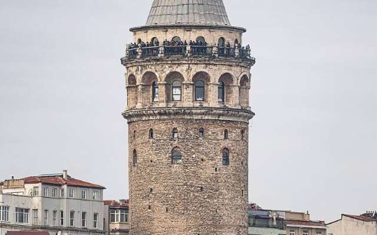
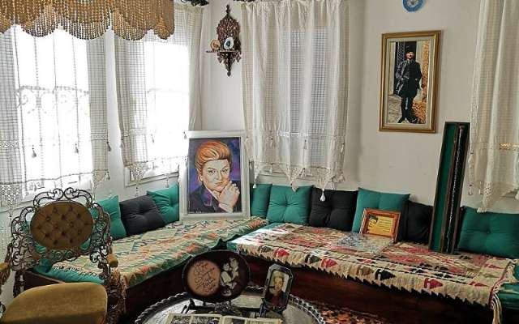

Tarih Öncesi ve Neolitik
MÖ 12.000 – 3000 · 8 yer
 Arslantepe ÖrenyeriMalatya · Kalkolitik / Tunç / Geç Hitit
Arslantepe ÖrenyeriMalatya · Kalkolitik / Tunç / Geç Hitit GöbeklitepeŞanlıurfa · Neolitik
GöbeklitepeŞanlıurfa · Neolitik Çatalhöyük ÖrenyeriKonya · Neolitik
Çatalhöyük ÖrenyeriKonya · Neolitik Aşıklı HöyükAksaray · Neolitik
Aşıklı HöyükAksaray · Neolitik Karahantepe ÖrenyeriŞanlıurfa · Neolitik
Karahantepe ÖrenyeriŞanlıurfa · Neolitik Karain MağarasıAntalya · PaleolitikKırklareli MüzesiKırklareli · Tarih Öncesi / TrakŞanlıurfa Arkeoloji MüzesiŞanlıurfa · Neolitik – Osmanlı
Karain MağarasıAntalya · PaleolitikKırklareli MüzesiKırklareli · Tarih Öncesi / TrakŞanlıurfa Arkeoloji MüzesiŞanlıurfa · Neolitik – OsmanlıTunç Çağı ve Hititler
MÖ 3000 – 1200 · 14 yer
Arslantepe ÖrenyeriMalatya · Kalkolitik / Tunç / Geç Hitit HattuşaÇorum · Hitit
HattuşaÇorum · Hitit TroyaÇanakkale · Tunç Çağı / Roma
TroyaÇanakkale · Tunç Çağı / Roma Alacahöyük Müzesi ve ÖrenyeriÇorum · Tunç Çağı / Hitit
Alacahöyük Müzesi ve ÖrenyeriÇorum · Tunç Çağı / Hitit Fethiye Tlos ÖrenyeriMuğla · Tunç Çağı – Osmanlı
Fethiye Tlos ÖrenyeriMuğla · Tunç Çağı – Osmanlı Harran ÖrenyeriŞanlıurfa · Tunç Çağı – Ortaçağ
Harran ÖrenyeriŞanlıurfa · Tunç Çağı – Ortaçağ Iassos ÖrenyeriMuğla · Tunç Çağı – Bizans
Iassos ÖrenyeriMuğla · Tunç Çağı – Bizans Kaman Kalehöyük Arkeoloji MüzesiKırşehir · Tunç Çağı / Demir Çağı
Kaman Kalehöyük Arkeoloji MüzesiKırşehir · Tunç Çağı / Demir Çağı Karatepe Aslantaş Müzesi ve ÖrenyeriOsmaniye · Geç Hitit (MÖ 8. yy)
Karatepe Aslantaş Müzesi ve ÖrenyeriOsmaniye · Geç Hitit (MÖ 8. yy) Kültepe ÖrenyeriKayseri · Tunç Çağı
Kültepe ÖrenyeriKayseri · Tunç Çağı Yesemek ÖrenyeriGaziantep · Geç Hitit
Yesemek ÖrenyeriGaziantep · Geç Hitit Bodrum Sualtı Arkeoloji MüzesiMuğla · Tunç Çağı – Osmanlı
Bodrum Sualtı Arkeoloji MüzesiMuğla · Tunç Çağı – Osmanlı Boğazköy MüzesiÇorum · HititŞanlıurfa Arkeoloji MüzesiŞanlıurfa · Neolitik – Osmanlı
Boğazköy MüzesiÇorum · HititŞanlıurfa Arkeoloji MüzesiŞanlıurfa · Neolitik – OsmanlıDemir Çağı Krallıkları
MÖ 1200 – 550 · 37 yer
Arslantepe ÖrenyeriMalatya · Kalkolitik / Tunç / Geç Hitit Xanthos ÖrenyeriAntalya · Likya
Xanthos ÖrenyeriAntalya · Likya Gordion MüzesiAnkara · Frig
Gordion MüzesiAnkara · Frig Amintas Kaya MezarıMuğla · Likya (MÖ 4. yy)
Amintas Kaya MezarıMuğla · Likya (MÖ 4. yy) Arykanda ÖrenyeriAntalya · Likya / Roma
Arykanda ÖrenyeriAntalya · Likya / Roma Fethiye Letoon ÖrenyeriMuğla · Likya / Roma
Fethiye Letoon ÖrenyeriMuğla · Likya / Roma Fethiye Pınara ÖrenyeriMuğla · Likya / RomaFethiye Tlos ÖrenyeriMuğla · Tunç Çağı – Osmanlı
Fethiye Pınara ÖrenyeriMuğla · Likya / RomaFethiye Tlos ÖrenyeriMuğla · Tunç Çağı – Osmanlı Harput KalesiElâzığ · Urartu / OrtaçağHarran ÖrenyeriŞanlıurfa · Tunç Çağı – OrtaçağIassos ÖrenyeriMuğla · Tunç Çağı – BizansKaman Kalehöyük Arkeoloji MüzesiKırşehir · Tunç Çağı / Demir ÇağıKaratepe Aslantaş Müzesi ve ÖrenyeriOsmaniye · Geç Hitit (MÖ 8. yy)
Harput KalesiElâzığ · Urartu / OrtaçağHarran ÖrenyeriŞanlıurfa · Tunç Çağı – OrtaçağIassos ÖrenyeriMuğla · Tunç Çağı – BizansKaman Kalehöyük Arkeoloji MüzesiKırşehir · Tunç Çağı / Demir ÇağıKaratepe Aslantaş Müzesi ve ÖrenyeriOsmaniye · Geç Hitit (MÖ 8. yy) Kaunos ÖrenyeriMuğla · Karya / Helenistik / Roma
Kaunos ÖrenyeriMuğla · Karya / Helenistik / Roma Labraunda ÖrenyeriMuğla · Karya / Helenistik
Labraunda ÖrenyeriMuğla · Karya / Helenistik Likya Uygarlıkları Müzesi ve Andrıake ÖrenyeriAntalya · Likya / Roma
Likya Uygarlıkları Müzesi ve Andrıake ÖrenyeriAntalya · Likya / Roma Limyra ÖrenyeriAntalya · Likya / Roma
Limyra ÖrenyeriAntalya · Likya / Roma Midas Yazılıkaya ÖrenyeriEskişehir · Frig
Midas Yazılıkaya ÖrenyeriEskişehir · Frig Milas Uzunyuva Anıt Mezarı ve Müze KompleksiMuğla · Karya (MÖ 4. yy)
Milas Uzunyuva Anıt Mezarı ve Müze KompleksiMuğla · Karya (MÖ 4. yy) Myra ÖrenyeriAntalya · Likya / Roma
Myra ÖrenyeriAntalya · Likya / Roma Olympos ÖrenyeriAntalya · Likya / Roma
Olympos ÖrenyeriAntalya · Likya / Roma Patara ÖrenyeriAntalya · Likya / Roma
Patara ÖrenyeriAntalya · Likya / Roma Pessinus ÖrenyeriEskişehir · Frig / Helenistik / Roma
Pessinus ÖrenyeriEskişehir · Frig / Helenistik / Roma Phaselis ÖrenyeriAntalya · Likya / Roma
Phaselis ÖrenyeriAntalya · Likya / Roma Sardes ÖrenyeriManisa · Lidya / Roma
Sardes ÖrenyeriManisa · Lidya / Roma Simena ÖrenyeriAntalya · Likya / Bizans
Simena ÖrenyeriAntalya · Likya / Bizans Van KalesiVan · Urartu – OsmanlıYesemek ÖrenyeriGaziantep · Geç Hitit
Van KalesiVan · Urartu – OsmanlıYesemek ÖrenyeriGaziantep · Geç Hitit Çavuştepe KalesiVan · Urartu (MÖ 8–7. yy)Bodrum Sualtı Arkeoloji MüzesiMuğla · Tunç Çağı – Osmanlı
Çavuştepe KalesiVan · Urartu (MÖ 8–7. yy)Bodrum Sualtı Arkeoloji MüzesiMuğla · Tunç Çağı – Osmanlı Erzincan MüzesiErzincan · Urartu / Çok DönemliFethiye MüzesiMuğla · Likya / RomaKırklareli MüzesiKırklareli · Tarih Öncesi / Trak
Erzincan MüzesiErzincan · Urartu / Çok DönemliFethiye MüzesiMuğla · Likya / RomaKırklareli MüzesiKırklareli · Tarih Öncesi / Trak Muğla Bodrum Mausoleium Anıt MüzesiMuğla · Karya (MÖ 4. yy)Uşak MüzesiUşak · Lidya / Çok Dönemli
Muğla Bodrum Mausoleium Anıt MüzesiMuğla · Karya (MÖ 4. yy)Uşak MüzesiUşak · Lidya / Çok Dönemli Van MüzesiVan · Urartu / Çok DönemliŞanlıurfa Arkeoloji MüzesiŞanlıurfa · Neolitik – Osmanlı
Van MüzesiVan · Urartu / Çok DönemliŞanlıurfa Arkeoloji MüzesiŞanlıurfa · Neolitik – OsmanlıKlasik ve Helenistik Dönem
MÖ 550 – 30 · 59 yer
 Afrodisias Müzesi ve ÖrenyeriAydın · Helenistik / Roma
Afrodisias Müzesi ve ÖrenyeriAydın · Helenistik / Roma Bergama Akropolüİzmir · Helenistik / Roma
Bergama Akropolüİzmir · Helenistik / Roma Bergama Asklepion Örenyeriİzmir · Helenistik / Roma
Bergama Asklepion Örenyeriİzmir · Helenistik / Roma Efesİzmir · Helenistik / Roma
Efesİzmir · Helenistik / Roma Hierapolis (Pamukkale) ÖrenyeriDenizli · Helenistik / Roma
Hierapolis (Pamukkale) ÖrenyeriDenizli · Helenistik / Roma Nemrut DağıAdıyaman · Helenistik (Kommagene)
Nemrut DağıAdıyaman · Helenistik (Kommagene) Agora Örenyeriİzmir · Helenistik / RomaAigai ÖrenyeriManisa · Helenistik / Roma
Agora Örenyeriİzmir · Helenistik / RomaAigai ÖrenyeriManisa · Helenistik / Roma Alabanda ÖrenyeriAydın · Helenistik / Roma
Alabanda ÖrenyeriAydın · Helenistik / Roma Alaşehir ÖrenyeriManisa · Helenistik / Bizans
Alaşehir ÖrenyeriManisa · Helenistik / Bizans Alexandria Troas ÖrenyeriÇanakkale · Helenistik / Roma
Alexandria Troas ÖrenyeriÇanakkale · Helenistik / Roma Alinda ÖrenyeriAydın · Helenistik / Roma
Alinda ÖrenyeriAydın · Helenistik / Roma Antalya Syedra Antik KentiAntalya · Helenistik / Roma
Antalya Syedra Antik KentiAntalya · Helenistik / Roma Antiocheia ÖrenyeriIsparta · Helenistik / Roma
Antiocheia ÖrenyeriIsparta · Helenistik / Roma Apollon Smintheion ÖrenyeriÇanakkale · Helenistik
Apollon Smintheion ÖrenyeriÇanakkale · Helenistik Arsemeia ÖrenyeriAdıyaman · Helenistik (Kommagene)
Arsemeia ÖrenyeriAdıyaman · Helenistik (Kommagene) Assos ÖrenyeriÇanakkale · Arkaik / Helenistik
Assos ÖrenyeriÇanakkale · Arkaik / Helenistik Blaundos ÖrenyeriUşak · Helenistik / Roma
Blaundos ÖrenyeriUşak · Helenistik / Roma Bodrum Antik TiyatrosuMuğla · Helenistik / Roma
Bodrum Antik TiyatrosuMuğla · Helenistik / Roma Denizli Tripolis ÖrenyeriDenizli · Helenistik / Roma
Denizli Tripolis ÖrenyeriDenizli · Helenistik / Roma Didim Apollon TapınağıAydın · Helenistik / RomaFethiye Tlos ÖrenyeriMuğla · Tunç Çağı – OsmanlıFilyos(Tios) ÖrenyeriZonguldak · Helenistik – BizansHarran ÖrenyeriŞanlıurfa · Tunç Çağı – OrtaçağIassos ÖrenyeriMuğla · Tunç Çağı – Bizans
Didim Apollon TapınağıAydın · Helenistik / RomaFethiye Tlos ÖrenyeriMuğla · Tunç Çağı – OsmanlıFilyos(Tios) ÖrenyeriZonguldak · Helenistik – BizansHarran ÖrenyeriŞanlıurfa · Tunç Çağı – OrtaçağIassos ÖrenyeriMuğla · Tunç Çağı – Bizans Kahta Yenikale ÖrenyeriAdıyaman · Kommagene / Ortaçağ
Kahta Yenikale ÖrenyeriAdıyaman · Kommagene / Ortaçağ Kanlı Divane ÖrenyeriMersin · Helenistik / Roma / Bizans
Kanlı Divane ÖrenyeriMersin · Helenistik / Roma / Bizans Kastabala ÖrenyeriOsmaniye · Helenistik / Roma / OrtaçağKaunos ÖrenyeriMuğla · Karya / Helenistik / Roma
Kastabala ÖrenyeriOsmaniye · Helenistik / Roma / OrtaçağKaunos ÖrenyeriMuğla · Karya / Helenistik / Roma Klaros Örenyeriİzmir · Arkaik / RomaKlazomenai Örenyeriİzmir · ArkaikLabraunda ÖrenyeriMuğla · Karya / Helenistik
Klaros Örenyeriİzmir · Arkaik / RomaKlazomenai Örenyeriİzmir · ArkaikLabraunda ÖrenyeriMuğla · Karya / Helenistik Lagina ÖrenyeriMuğla · Helenistik / Roma
Lagina ÖrenyeriMuğla · Helenistik / Roma Laodikeia ÖrenyeriDenizli · Helenistik / Roma
Laodikeia ÖrenyeriDenizli · Helenistik / Roma Magnesia ÖrenyeriAydın · Helenistik / Roma
Magnesia ÖrenyeriAydın · Helenistik / Roma Manisa Akhisar Müzesi ve Akhisar Tepe MezarlığıManisa · Helenistik / Roma
Manisa Akhisar Müzesi ve Akhisar Tepe MezarlığıManisa · Helenistik / Roma Metropolis Örenyeriİzmir · Helenistik / Roma
Metropolis Örenyeriİzmir · Helenistik / Roma Milas Euromos ÖrenyeriMuğla · Helenistik / Roma
Milas Euromos ÖrenyeriMuğla · Helenistik / Roma Milet ÖrenyeriAydın · Arkaik / Roma
Milet ÖrenyeriAydın · Arkaik / Roma Muğla Knidos ÖrenyeriMuğla · Klasik / Helenistik
Muğla Knidos ÖrenyeriMuğla · Klasik / Helenistik Nysa Sultanhisar ÖrenyeriAydın · Helenistik / Roma
Nysa Sultanhisar ÖrenyeriAydın · Helenistik / Roma Perge ÖrenyeriAntalya · Helenistik / Roma
Perge ÖrenyeriAntalya · Helenistik / Roma Perre ÖrenyeriAdıyaman · Kommagene / RomaPessinus ÖrenyeriEskişehir · Frig / Helenistik / Roma
Perre ÖrenyeriAdıyaman · Kommagene / RomaPessinus ÖrenyeriEskişehir · Frig / Helenistik / Roma Priene ÖrenyeriAydın · Helenistik
Priene ÖrenyeriAydın · Helenistik Sagalassos ÖrenyeriBurdur · Helenistik / Roma
Sagalassos ÖrenyeriBurdur · Helenistik / Roma Sedir Adası ÖrenyeriMuğla · Helenistik / Roma
Sedir Adası ÖrenyeriMuğla · Helenistik / Roma Side ÖrenyeriAntalya · Helenistik / RomaSofraz Anıt MezarıAdıyaman · Helenistik / Roma
Side ÖrenyeriAntalya · Helenistik / RomaSofraz Anıt MezarıAdıyaman · Helenistik / Roma Stratonikeia ÖrenyeriMuğla · Helenistik – Osmanlı
Stratonikeia ÖrenyeriMuğla · Helenistik – Osmanlı Teos Örenyeriİzmir · Arkaik / Helenistik
Teos Örenyeriİzmir · Arkaik / Helenistik Termessos ÖrenyeriAntalya · Helenistik / Roma
Termessos ÖrenyeriAntalya · Helenistik / Roma Uzuncaburç ÖrenyeriMersin · Helenistik / RomaVan KalesiVan · Urartu – Osmanlı
Uzuncaburç ÖrenyeriMersin · Helenistik / RomaVan KalesiVan · Urartu – Osmanlı Zeugma ÖrenyeriGaziantep · Helenistik / RomaÇevlik ÖrenyeriHatay · Helenistik / Roma
Zeugma ÖrenyeriGaziantep · Helenistik / RomaÇevlik ÖrenyeriHatay · Helenistik / Roma Şanlıurfa KalesiŞanlıurfa · Helenistik – OrtaçağBodrum Sualtı Arkeoloji MüzesiMuğla · Tunç Çağı – OsmanlıŞanlıurfa Arkeoloji MüzesiŞanlıurfa · Neolitik – Osmanlı
Şanlıurfa KalesiŞanlıurfa · Helenistik – OrtaçağBodrum Sualtı Arkeoloji MüzesiMuğla · Tunç Çağı – OsmanlıŞanlıurfa Arkeoloji MüzesiŞanlıurfa · Neolitik – OsmanlıRoma Dönemi
MÖ 30 – MS 330 · 84 yer
Afrodisias Müzesi ve ÖrenyeriAydın · Helenistik / RomaBergama Akropolüİzmir · Helenistik / RomaBergama Asklepion Örenyeriİzmir · Helenistik / Roma Bergama Kızılavluİzmir · Roma / BizansEfesİzmir · Helenistik / RomaHierapolis (Pamukkale) ÖrenyeriDenizli · Helenistik / RomaTroyaÇanakkale · Tunç Çağı / RomaAgora Örenyeriİzmir · Helenistik / RomaAigai ÖrenyeriManisa · Helenistik / Roma
Bergama Kızılavluİzmir · Roma / BizansEfesİzmir · Helenistik / RomaHierapolis (Pamukkale) ÖrenyeriDenizli · Helenistik / RomaTroyaÇanakkale · Tunç Çağı / RomaAgora Örenyeriİzmir · Helenistik / RomaAigai ÖrenyeriManisa · Helenistik / Roma Aizanoi ÖrenyeriKütahya · RomaAlabanda ÖrenyeriAydın · Helenistik / RomaAlexandria Troas ÖrenyeriÇanakkale · Helenistik / RomaAlinda ÖrenyeriAydın · Helenistik / Roma
Aizanoi ÖrenyeriKütahya · RomaAlabanda ÖrenyeriAydın · Helenistik / RomaAlexandria Troas ÖrenyeriÇanakkale · Helenistik / RomaAlinda ÖrenyeriAydın · Helenistik / Roma Anavarza ÖrenyeriAdana · Roma / Bizans
Anavarza ÖrenyeriAdana · Roma / Bizans Anemurium ÖrenyeriMersin · Roma / BizansAntalya Syedra Antik KentiAntalya · Helenistik / RomaAntiocheia ÖrenyeriIsparta · Helenistik / RomaArykanda ÖrenyeriAntalya · Likya / Roma
Anemurium ÖrenyeriMersin · Roma / BizansAntalya Syedra Antik KentiAntalya · Helenistik / RomaAntiocheia ÖrenyeriIsparta · Helenistik / RomaArykanda ÖrenyeriAntalya · Likya / Roma AspendosAntalya · RomaBlaundos ÖrenyeriUşak · Helenistik / RomaBodrum Antik TiyatrosuMuğla · Helenistik / RomaDenizli Tripolis ÖrenyeriDenizli · Helenistik / RomaDidim Apollon TapınağıAydın · Helenistik / Roma
AspendosAntalya · RomaBlaundos ÖrenyeriUşak · Helenistik / RomaBodrum Antik TiyatrosuMuğla · Helenistik / RomaDenizli Tripolis ÖrenyeriDenizli · Helenistik / RomaDidim Apollon TapınağıAydın · Helenistik / Roma Edirne Makedonya KulesiEdirne · Roma / Bizans / Osmanlı
Edirne Makedonya KulesiEdirne · Roma / Bizans / Osmanlı Efes Örenyeri-Yamaçevlerİzmir · Roma / BizansFethiye Letoon ÖrenyeriMuğla · Likya / RomaFethiye Pınara ÖrenyeriMuğla · Likya / RomaFethiye Tlos ÖrenyeriMuğla · Tunç Çağı – OsmanlıFilyos(Tios) ÖrenyeriZonguldak · Helenistik – BizansGermanicia Mozaikli AlanKahramanmaraş · RomaHadrianopolis ÖrenyeriKarabük · Roma / BizansHarran ÖrenyeriŞanlıurfa · Tunç Çağı – OrtaçağIassos ÖrenyeriMuğla · Tunç Çağı – BizansKanlı Divane ÖrenyeriMersin · Helenistik / Roma / BizansKastabala ÖrenyeriOsmaniye · Helenistik / Roma / OrtaçağKaunos ÖrenyeriMuğla · Karya / Helenistik / Roma
Efes Örenyeri-Yamaçevlerİzmir · Roma / BizansFethiye Letoon ÖrenyeriMuğla · Likya / RomaFethiye Pınara ÖrenyeriMuğla · Likya / RomaFethiye Tlos ÖrenyeriMuğla · Tunç Çağı – OsmanlıFilyos(Tios) ÖrenyeriZonguldak · Helenistik – BizansGermanicia Mozaikli AlanKahramanmaraş · RomaHadrianopolis ÖrenyeriKarabük · Roma / BizansHarran ÖrenyeriŞanlıurfa · Tunç Çağı – OrtaçağIassos ÖrenyeriMuğla · Tunç Çağı – BizansKanlı Divane ÖrenyeriMersin · Helenistik / Roma / BizansKastabala ÖrenyeriOsmaniye · Helenistik / Roma / OrtaçağKaunos ÖrenyeriMuğla · Karya / Helenistik / Roma Kibyra ÖrenyeriBurdur · RomaKlaros Örenyeriİzmir · Arkaik / RomaLagina ÖrenyeriMuğla · Helenistik / RomaLaodikeia ÖrenyeriDenizli · Helenistik / RomaLikya Uygarlıkları Müzesi ve Andrıake ÖrenyeriAntalya · Likya / RomaLimyra ÖrenyeriAntalya · Likya / RomaMagnesia ÖrenyeriAydın · Helenistik / RomaManisa Akhisar Müzesi ve Akhisar Tepe MezarlığıManisa · Helenistik / RomaMetropolis Örenyeriİzmir · Helenistik / RomaMilas Euromos ÖrenyeriMuğla · Helenistik / RomaMilet ÖrenyeriAydın · Arkaik / RomaMyra ÖrenyeriAntalya · Likya / RomaNiğde Andaval ÖrenyeriNiğde · Roma / BizansNysa Sultanhisar ÖrenyeriAydın · Helenistik / RomaOlympos ÖrenyeriAntalya · Likya / RomaPatara ÖrenyeriAntalya · Likya / RomaPerge ÖrenyeriAntalya · Helenistik / RomaPerre ÖrenyeriAdıyaman · Kommagene / RomaPessinus ÖrenyeriEskişehir · Frig / Helenistik / RomaPhaselis ÖrenyeriAntalya · Likya / Roma
Kibyra ÖrenyeriBurdur · RomaKlaros Örenyeriİzmir · Arkaik / RomaLagina ÖrenyeriMuğla · Helenistik / RomaLaodikeia ÖrenyeriDenizli · Helenistik / RomaLikya Uygarlıkları Müzesi ve Andrıake ÖrenyeriAntalya · Likya / RomaLimyra ÖrenyeriAntalya · Likya / RomaMagnesia ÖrenyeriAydın · Helenistik / RomaManisa Akhisar Müzesi ve Akhisar Tepe MezarlığıManisa · Helenistik / RomaMetropolis Örenyeriİzmir · Helenistik / RomaMilas Euromos ÖrenyeriMuğla · Helenistik / RomaMilet ÖrenyeriAydın · Arkaik / RomaMyra ÖrenyeriAntalya · Likya / RomaNiğde Andaval ÖrenyeriNiğde · Roma / BizansNysa Sultanhisar ÖrenyeriAydın · Helenistik / RomaOlympos ÖrenyeriAntalya · Likya / RomaPatara ÖrenyeriAntalya · Likya / RomaPerge ÖrenyeriAntalya · Helenistik / RomaPerre ÖrenyeriAdıyaman · Kommagene / RomaPessinus ÖrenyeriEskişehir · Frig / Helenistik / RomaPhaselis ÖrenyeriAntalya · Likya / Roma Roma Hamamı ÖrenyeriAnkara · RomaSagalassos ÖrenyeriBurdur · Helenistik / RomaSardes ÖrenyeriManisa · Lidya / Roma
Roma Hamamı ÖrenyeriAnkara · RomaSagalassos ÖrenyeriBurdur · Helenistik / RomaSardes ÖrenyeriManisa · Lidya / Roma Sarıkaya Roma HamamıYozgat · RomaSedir Adası ÖrenyeriMuğla · Helenistik / RomaSide ÖrenyeriAntalya · Helenistik / RomaSobessos ÖrenyeriNevşehir · Roma / BizansSofraz Anıt MezarıAdıyaman · Helenistik / RomaStratonikeia ÖrenyeriMuğla · Helenistik – Osmanlı
Sarıkaya Roma HamamıYozgat · RomaSedir Adası ÖrenyeriMuğla · Helenistik / RomaSide ÖrenyeriAntalya · Helenistik / RomaSobessos ÖrenyeriNevşehir · Roma / BizansSofraz Anıt MezarıAdıyaman · Helenistik / RomaStratonikeia ÖrenyeriMuğla · Helenistik – Osmanlı Tarsus St. Paul KuyusuMersin · Roma / Erken HristiyanlıkTermessos ÖrenyeriAntalya · Helenistik / RomaUzuncaburç ÖrenyeriMersin · Helenistik / RomaVan KalesiVan · Urartu – OsmanlıZeugma ÖrenyeriGaziantep · Helenistik / RomaÇevlik ÖrenyeriHatay · Helenistik / RomaŞanlıurfa KalesiŞanlıurfa · Helenistik – OrtaçağBodrum Sualtı Arkeoloji MüzesiMuğla · Tunç Çağı – OsmanlıFethiye MüzesiMuğla · Likya / Roma
Tarsus St. Paul KuyusuMersin · Roma / Erken HristiyanlıkTermessos ÖrenyeriAntalya · Helenistik / RomaUzuncaburç ÖrenyeriMersin · Helenistik / RomaVan KalesiVan · Urartu – OsmanlıZeugma ÖrenyeriGaziantep · Helenistik / RomaÇevlik ÖrenyeriHatay · Helenistik / RomaŞanlıurfa KalesiŞanlıurfa · Helenistik – OrtaçağBodrum Sualtı Arkeoloji MüzesiMuğla · Tunç Çağı – OsmanlıFethiye MüzesiMuğla · Likya / Roma Haleplibahçe Mozaik MüzesiŞanlıurfa · Roma / Bizans
Haleplibahçe Mozaik MüzesiŞanlıurfa · Roma / Bizans Hatay Arkeoloji MüzesiHatay · Roma / Çok Dönemli
Hatay Arkeoloji MüzesiHatay · Roma / Çok Dönemli Hierapolis (Pamukkale) Arkeoloji MüzesiDenizli · RomaKocaeli Arkeoloji MüzesiKocaeli · Roma / Çok Dönemli
Hierapolis (Pamukkale) Arkeoloji MüzesiDenizli · RomaKocaeli Arkeoloji MüzesiKocaeli · Roma / Çok Dönemli Konuralp MüzesiDüzce · Roma
Konuralp MüzesiDüzce · Roma Side MüzesiAntalya · Roma
Side MüzesiAntalya · Roma Silifke Narlıkuyu Mozaik MüzesiMersin · Roma
Silifke Narlıkuyu Mozaik MüzesiMersin · Roma Yalvaç MüzesiIsparta · Roma / Çok Dönemli
Yalvaç MüzesiIsparta · Roma / Çok Dönemli Zeugma Mozaik MüzesiGaziantep · RomaŞanlıurfa Arkeoloji MüzesiŞanlıurfa · Neolitik – Osmanlı
Zeugma Mozaik MüzesiGaziantep · RomaŞanlıurfa Arkeoloji MüzesiŞanlıurfa · Neolitik – OsmanlıBizans ve Orta Çağ
330 – 1453 · 74 yer
 Ani ÖrenyeriKars · OrtaçağBergama Kızılavluİzmir · Roma / Bizans
Ani ÖrenyeriKars · OrtaçağBergama Kızılavluİzmir · Roma / Bizans Derinkuyu Yeraltı ŞehriNevşehir · Bizans
Derinkuyu Yeraltı ŞehriNevşehir · Bizans El Nazar KilisesiNevşehir · Bizans (10. yy)
El Nazar KilisesiNevşehir · Bizans (10. yy) Göreme ÖrenyeriNevşehir · Bizans (9.–12. yy)
Göreme ÖrenyeriNevşehir · Bizans (9.–12. yy) Karanlık Kilise (Göreme)Nevşehir · Bizans (11. yy)
Karanlık Kilise (Göreme)Nevşehir · Bizans (11. yy) Kaymaklı Yeraltı ŞehriNevşehir · Bizans
Kaymaklı Yeraltı ŞehriNevşehir · Bizans Zelve - Paşabağlar ÖrenyeriNevşehir · Bizans / Osmanlı
Zelve - Paşabağlar ÖrenyeriNevşehir · Bizans / Osmanlı Çavuşin Örenyeri (Çavuşin Kilisesi)Nevşehir · BizansAksaray Manastır Vadisi ÖrenyeriAksaray · Bizans
Çavuşin Örenyeri (Çavuşin Kilisesi)Nevşehir · BizansAksaray Manastır Vadisi ÖrenyeriAksaray · Bizans Alahan ManastırıMersin · BizansAlaşehir ÖrenyeriManisa · Helenistik / BizansAnavarza ÖrenyeriAdana · Roma / BizansAnemurium ÖrenyeriMersin · Roma / Bizans
Alahan ManastırıMersin · BizansAlaşehir ÖrenyeriManisa · Helenistik / BizansAnavarza ÖrenyeriAdana · Roma / BizansAnemurium ÖrenyeriMersin · Roma / Bizans Ayasuluk - St.Jean Örenyeriİzmir · Bizans
Ayasuluk - St.Jean Örenyeriİzmir · Bizans Ayasuluk Kalesiİzmir · Bizans / BeyliklerAziz Mercurius Yeraltı ŞehriAksaray · BizansBursa İznik Göl BazilikasıBursa · Bizans
Ayasuluk Kalesiİzmir · Bizans / BeyliklerAziz Mercurius Yeraltı ŞehriAksaray · BizansBursa İznik Göl BazilikasıBursa · Bizans Dara ÖrenyeriMardin · BizansEdirne Makedonya KulesiEdirne · Roma / Bizans / OsmanlıEfes Örenyeri-Yamaçevlerİzmir · Roma / Bizans
Dara ÖrenyeriMardin · BizansEdirne Makedonya KulesiEdirne · Roma / Bizans / OsmanlıEfes Örenyeri-Yamaçevlerİzmir · Roma / Bizans Erzurum KalesiErzurum · Bizans / Selçuklu / Osmanlı
Erzurum KalesiErzurum · Bizans / Selçuklu / Osmanlı Fethiye Gemile AdasıMuğla · BizansFethiye Tlos ÖrenyeriMuğla · Tunç Çağı – OsmanlıFilyos(Tios) ÖrenyeriZonguldak · Helenistik – Bizans
Fethiye Gemile AdasıMuğla · BizansFethiye Tlos ÖrenyeriMuğla · Tunç Çağı – OsmanlıFilyos(Tios) ÖrenyeriZonguldak · Helenistik – Bizans Gaziantep KalesiGaziantep · Bizans / Memlük / Osmanlı
Gaziantep KalesiGaziantep · Bizans / Memlük / Osmanlı Gözne KalesiMersin · Ortaçağ
Gözne KalesiMersin · Ortaçağ Gülşehir-St.Jean KilisesiNevşehir · Bizans (13. yy)
Gülşehir-St.Jean KilisesiNevşehir · Bizans (13. yy) Gümüşler Manastırı ve Yeraltı ŞehriNiğde · BizansHadrianopolis ÖrenyeriKarabük · Roma / BizansHarput KalesiElâzığ · Urartu / OrtaçağHarran ÖrenyeriŞanlıurfa · Tunç Çağı – OrtaçağIassos ÖrenyeriMuğla · Tunç Çağı – Bizans
Gümüşler Manastırı ve Yeraltı ŞehriNiğde · BizansHadrianopolis ÖrenyeriKarabük · Roma / BizansHarput KalesiElâzığ · Urartu / OrtaçağHarran ÖrenyeriŞanlıurfa · Tunç Çağı – OrtaçağIassos ÖrenyeriMuğla · Tunç Çağı – Bizans Ihlara Vadisi ÖrenyeriAksaray · BizansKadıkalesi ÖrenyeriAydın · Bizans / OrtaçağKahta Yenikale ÖrenyeriAdıyaman · Kommagene / OrtaçağKanlı Divane ÖrenyeriMersin · Helenistik / Roma / BizansKastabala ÖrenyeriOsmaniye · Helenistik / Roma / Ortaçağ
Ihlara Vadisi ÖrenyeriAksaray · BizansKadıkalesi ÖrenyeriAydın · Bizans / OrtaçağKahta Yenikale ÖrenyeriAdıyaman · Kommagene / OrtaçağKanlı Divane ÖrenyeriMersin · Helenistik / Roma / BizansKastabala ÖrenyeriOsmaniye · Helenistik / Roma / Ortaçağ Keskin Sulu Mağara Yeraltı ŞehriKırıkkale · Bizans / OrtaçağKüçük Ayvasıl St. Anna KilisesiTrabzon · Bizans (9. yy)
Keskin Sulu Mağara Yeraltı ŞehriKırıkkale · Bizans / OrtaçağKüçük Ayvasıl St. Anna KilisesiTrabzon · Bizans (9. yy) Kız Kulesiİstanbul · Bizans / Osmanlı
Kız Kulesiİstanbul · Bizans / Osmanlı Mamure KalesiMersin · Ortaçağ / OsmanlıMazı Yeraltı ŞehriNevşehir · Bizans
Mamure KalesiMersin · Ortaçağ / OsmanlıMazı Yeraltı ŞehriNevşehir · Bizans Mersin Kız KalesiMersin · Bizans / Ortaçağ
Mersin Kız KalesiMersin · Bizans / Ortaçağ Meryem Ana ManastırıGiresun · BizansMucur Yeraltı ŞehriKırşehir · Bizans / OrtaçağNiğde Andaval ÖrenyeriNiğde · Roma / Bizans
Meryem Ana ManastırıGiresun · BizansMucur Yeraltı ŞehriKırşehir · Bizans / OrtaçağNiğde Andaval ÖrenyeriNiğde · Roma / Bizans Rumkale ÖrenyeriGaziantep · Ortaçağ
Rumkale ÖrenyeriGaziantep · Ortaçağ Saratlı Kırkgöz Yeraltı ŞehriAksaray · Bizans
Saratlı Kırkgöz Yeraltı ŞehriAksaray · Bizans Silifke Ayatekla ÖrenyeriMersin · Erken Hristiyanlık / Bizans
Silifke Ayatekla ÖrenyeriMersin · Erken Hristiyanlık / Bizans Silifke Cennet Cehennem ObruklarıMersin · Doğal Alan / BizansSimena ÖrenyeriAntalya · Likya / BizansSobessos ÖrenyeriNevşehir · Roma / Bizans
Silifke Cennet Cehennem ObruklarıMersin · Doğal Alan / BizansSimena ÖrenyeriAntalya · Likya / BizansSobessos ÖrenyeriNevşehir · Roma / Bizans St. Simon ManastırıHatay · BizansStratonikeia ÖrenyeriMuğla · Helenistik – Osmanlı
St. Simon ManastırıHatay · BizansStratonikeia ÖrenyeriMuğla · Helenistik – Osmanlı Sümela ManastırıTrabzon · Bizans – 20. yyTarsus St. Paul KuyusuMersin · Roma / Erken Hristiyanlık
Sümela ManastırıTrabzon · Bizans – 20. yyTarsus St. Paul KuyusuMersin · Roma / Erken Hristiyanlık Tatlarin Yeraltı ŞehriNevşehir · BizansVan KalesiVan · Urartu – Osmanlı
Tatlarin Yeraltı ŞehriNevşehir · BizansVan KalesiVan · Urartu – Osmanlı Yeşilhisar Soğanlı ÖrenyeriKayseri · Bizans
Yeşilhisar Soğanlı ÖrenyeriKayseri · Bizans Özkonak Yeraltı ŞehriNevşehir · Bizans
Özkonak Yeraltı ŞehriNevşehir · Bizans
İstanbul Galata Kulesiİstanbul · Ceneviz / OsmanlıŞanlıurfa KalesiŞanlıurfa · Helenistik – OrtaçağAkdamar Anıt MüzesiVan · Ortaçağ (10. yy) Ayasofya Tarih ve Deneyim Müzesiİstanbul · Bizans / Osmanlı
Ayasofya Tarih ve Deneyim Müzesiİstanbul · Bizans / Osmanlı Aziz (St.) Nikolaos Anıt MüzesiAntalya · BizansBodrum Serçe Limanı Cam Batığı Sergi SalonuMuğla · Ortaçağ (11. yy)Bodrum Sualtı Arkeoloji MüzesiMuğla · Tunç Çağı – Osmanlı
Aziz (St.) Nikolaos Anıt MüzesiAntalya · BizansBodrum Serçe Limanı Cam Batığı Sergi SalonuMuğla · Ortaçağ (11. yy)Bodrum Sualtı Arkeoloji MüzesiMuğla · Tunç Çağı – Osmanlı Büyük Saray Mozaikleri Müzesiİstanbul · Bizans
Büyük Saray Mozaikleri Müzesiİstanbul · Bizans Fethiye Müzesiİstanbul · BizansHaleplibahçe Mozaik MüzesiŞanlıurfa · Roma / Bizans
Fethiye Müzesiİstanbul · BizansHaleplibahçe Mozaik MüzesiŞanlıurfa · Roma / Bizans St. Pierre Anıt MüzesiHatay · Erken Hristiyanlık
St. Pierre Anıt MüzesiHatay · Erken Hristiyanlık Tarsus St. Paul Anıt MüzesiMersin · Osmanlı / HristiyanlıkŞanlıurfa Arkeoloji MüzesiŞanlıurfa · Neolitik – Osmanlı
Tarsus St. Paul Anıt MüzesiMersin · Osmanlı / HristiyanlıkŞanlıurfa Arkeoloji MüzesiŞanlıurfa · Neolitik – OsmanlıSelçuklu ve Beylikler
1071 – 1400 · 19 yer
 Ahlat Selçuklu MezarlığıBitlis · Selçuklu / Beylikler
Ahlat Selçuklu MezarlığıBitlis · Selçuklu / Beylikler Alanya KalesiAntalya · SelçukluAyasuluk Kalesiİzmir · Bizans / BeyliklerErzurum KalesiErzurum · Bizans / Selçuklu / OsmanlıFethiye Tlos ÖrenyeriMuğla · Tunç Çağı – OsmanlıGaziantep KalesiGaziantep · Bizans / Memlük / Osmanlı
Alanya KalesiAntalya · SelçukluAyasuluk Kalesiİzmir · Bizans / BeyliklerErzurum KalesiErzurum · Bizans / Selçuklu / OsmanlıFethiye Tlos ÖrenyeriMuğla · Tunç Çağı – OsmanlıGaziantep KalesiGaziantep · Bizans / Memlük / Osmanlı Milas Beçin Kalesi ve ÖrenyeriMuğla · Antik / Menteşe BeyliğiStratonikeia ÖrenyeriMuğla · Helenistik – OsmanlıSümela ManastırıTrabzon · Bizans – 20. yyVan KalesiVan · Urartu – OsmanlıBodrum Sualtı Arkeoloji MüzesiMuğla · Tunç Çağı – Osmanlı
Milas Beçin Kalesi ve ÖrenyeriMuğla · Antik / Menteşe BeyliğiStratonikeia ÖrenyeriMuğla · Helenistik – OsmanlıSümela ManastırıTrabzon · Bizans – 20. yyVan KalesiVan · Urartu – OsmanlıBodrum Sualtı Arkeoloji MüzesiMuğla · Tunç Çağı – Osmanlı Etnografya MüzesiAnkara · Selçuklu / Osmanlı / Cumhuriyet
Etnografya MüzesiAnkara · Selçuklu / Osmanlı / Cumhuriyet Hacıbektaş MüzesiNevşehir · Selçuklu / Osmanlı
Hacıbektaş MüzesiNevşehir · Selçuklu / Osmanlı Karatay (Çini Eserler) MüzesiKonya · SelçukluMalazgirt MüzesiMuş · Selçuklu (1071)
Karatay (Çini Eserler) MüzesiKonya · SelçukluMalazgirt MüzesiMuş · Selçuklu (1071) Mevlana MüzesiKonya · Selçuklu / OsmanlıMevlevihane MüzesiAntalya · Selçuklu / Osmanlı
Mevlana MüzesiKonya · Selçuklu / OsmanlıMevlevihane MüzesiAntalya · Selçuklu / Osmanlı Türk ve İslam Eserleri Müzesiİstanbul · Selçuklu / OsmanlıŞanlıurfa Arkeoloji MüzesiŞanlıurfa · Neolitik – Osmanlı
Türk ve İslam Eserleri Müzesiİstanbul · Selçuklu / OsmanlıŞanlıurfa Arkeoloji MüzesiŞanlıurfa · Neolitik – OsmanlıOsmanlı Dönemi
1299 – 1922 · 67 yer
Zelve - Paşabağlar ÖrenyeriNevşehir · Bizans / OsmanlıAkşemsettin TürbesiBolu · OsmanlıEdirne Makedonya KulesiEdirne · Roma / Bizans / OsmanlıErzurum KalesiErzurum · Bizans / Selçuklu / Osmanlı Fethiye Kayaköy ÖrenyeriMuğla · 19.–20. yyFethiye Tlos ÖrenyeriMuğla · Tunç Çağı – OsmanlıGaziantep KalesiGaziantep · Bizans / Memlük / Osmanlı
Fethiye Kayaköy ÖrenyeriMuğla · 19.–20. yyFethiye Tlos ÖrenyeriMuğla · Tunç Çağı – OsmanlıGaziantep KalesiGaziantep · Bizans / Memlük / Osmanlı Hoşap KalesiVan · Osmanlı (17. yy)Kız Kulesiİstanbul · Bizans / OsmanlıMamure KalesiMersin · Ortaçağ / Osmanlı
Hoşap KalesiVan · Osmanlı (17. yy)Kız Kulesiİstanbul · Bizans / OsmanlıMamure KalesiMersin · Ortaçağ / Osmanlı Rumeli Hisarıİstanbul · OsmanlıStratonikeia ÖrenyeriMuğla · Helenistik – OsmanlıSümela ManastırıTrabzon · Bizans – 20. yy
Rumeli Hisarıİstanbul · OsmanlıStratonikeia ÖrenyeriMuğla · Helenistik – OsmanlıSümela ManastırıTrabzon · Bizans – 20. yy Tarihi CezaeviSinop · Osmanlı / CumhuriyetVan KalesiVan · Urartu – Osmanlı
Tarihi CezaeviSinop · Osmanlı / CumhuriyetVan KalesiVan · Urartu – Osmanlı İshak Paşa SarayıAğrı · Osmanlıİstanbul Galata Kulesiİstanbul · Ceneviz / Osmanlı
İshak Paşa SarayıAğrı · Osmanlıİstanbul Galata Kulesiİstanbul · Ceneviz / Osmanlı Adam Mickiewicz Müzesiİstanbul · Osmanlı
Adam Mickiewicz Müzesiİstanbul · Osmanlı Antalya Etnografya MüzesiAntalya · Osmanlı / Yakın Dönem
Antalya Etnografya MüzesiAntalya · Osmanlı / Yakın Dönem Atatürk, Redif ve Etnografya MüzesiKocaeli · Osmanlı / Cumhuriyet
Atatürk, Redif ve Etnografya MüzesiKocaeli · Osmanlı / Cumhuriyet Av Köşkü Saray MüzesiKocaeli · OsmanlıAyasofya Tarih ve Deneyim Müzesiİstanbul · Bizans / OsmanlıBeşkonaklar Etnografya Müzesi ve Geleneksel Malatya EviMalatya · Osmanlı / Yakın Dönem
Av Köşkü Saray MüzesiKocaeli · OsmanlıAyasofya Tarih ve Deneyim Müzesiİstanbul · Bizans / OsmanlıBeşkonaklar Etnografya Müzesi ve Geleneksel Malatya EviMalatya · Osmanlı / Yakın Dönem Birgi Çakırağa Konağıİzmir · OsmanlıBitlis Etnografya MüzesiBitlis · Osmanlı / Yakın DönemBodrum Sualtı Arkeoloji MüzesiMuğla · Tunç Çağı – Osmanlı
Birgi Çakırağa Konağıİzmir · OsmanlıBitlis Etnografya MüzesiBitlis · Osmanlı / Yakın DönemBodrum Sualtı Arkeoloji MüzesiMuğla · Tunç Çağı – Osmanlı Bursa Türk İslam Eserleri MüzesiBursa · Osmanlı
Bursa Türk İslam Eserleri MüzesiBursa · Osmanlı Cahit Sıtkı Tarancı Evi Etnografya MüzesiDiyarbakır · OsmanlıEdirne Hıdırlık Tabya Balkan Tarihi MüzesiEdirne · OsmanlıEtnografya MüzesiAnkara · Selçuklu / Osmanlı / Cumhuriyet
Cahit Sıtkı Tarancı Evi Etnografya MüzesiDiyarbakır · OsmanlıEdirne Hıdırlık Tabya Balkan Tarihi MüzesiEdirne · OsmanlıEtnografya MüzesiAnkara · Selçuklu / Osmanlı / Cumhuriyet Galata Mevlevihanesi Müzesiİstanbul · Osmanlı
Galata Mevlevihanesi Müzesiİstanbul · Osmanlı Güpgüpoğlu Konağı Etnografya MüzesiKayseri · OsmanlıHacıbektaş MüzesiNevşehir · Selçuklu / OsmanlıHamidiye Tabyası ve Çanakkale Savaşları Tarihi MüzesiÇanakkale · Osmanlı / Birinci Dünya Savaşı
Güpgüpoğlu Konağı Etnografya MüzesiKayseri · OsmanlıHacıbektaş MüzesiNevşehir · Selçuklu / OsmanlıHamidiye Tabyası ve Çanakkale Savaşları Tarihi MüzesiÇanakkale · Osmanlı / Birinci Dünya Savaşı Hazeranlar KonağıAmasya · OsmanlıKarabük Safranbolu MüzesiKarabük · Osmanlı
Hazeranlar KonağıAmasya · OsmanlıKarabük Safranbolu MüzesiKarabük · Osmanlı Kars Kafkas Cephesi Harp Tarihi MüzesiKars · Osmanlı / Birinci Dünya Savaşı
Kars Kafkas Cephesi Harp Tarihi MüzesiKars · Osmanlı / Birinci Dünya Savaşı Kilitbahir Kale MüzesiÇanakkale · OsmanlıKonya Etnografya MüzesiKonya · Osmanlı / Yakın Dönem
Kilitbahir Kale MüzesiÇanakkale · OsmanlıKonya Etnografya MüzesiKonya · Osmanlı / Yakın Dönem Kossouth Evi MüzesiKütahya · Osmanlı
Kossouth Evi MüzesiKütahya · Osmanlı Kuruköprü Anıt Müzesi ve Geleneksel Adana EviAdana · Osmanlı / CumhuriyetLatifoğlu KonağıTokat · Osmanlı (19. yy)Livapaşa Konağı Etnografya MüzesiKastamonu · OsmanlıMaden MüzesiZonguldak · 19.–20. yyMarmaris MüzesiMuğla · OsmanlıMevlana MüzesiKonya · Selçuklu / OsmanlıMevlevihane MüzesiAntalya · Selçuklu / Osmanlı
Kuruköprü Anıt Müzesi ve Geleneksel Adana EviAdana · Osmanlı / CumhuriyetLatifoğlu KonağıTokat · Osmanlı (19. yy)Livapaşa Konağı Etnografya MüzesiKastamonu · OsmanlıMaden MüzesiZonguldak · 19.–20. yyMarmaris MüzesiMuğla · OsmanlıMevlana MüzesiKonya · Selçuklu / OsmanlıMevlevihane MüzesiAntalya · Selçuklu / Osmanlı Namazgâh Tabyası MüzesiÇanakkale · Osmanlı / Birinci Dünya Savaşı
Namazgâh Tabyası MüzesiÇanakkale · Osmanlı / Birinci Dünya Savaşı Necmi İğe Evi Etnografya MüzesiEdirne · OsmanlıNilüfer Hatun İmareti Türk İslam Eserleri MüzesiBursa · Osmanlı
Necmi İğe Evi Etnografya MüzesiEdirne · OsmanlıNilüfer Hatun İmareti Türk İslam Eserleri MüzesiBursa · Osmanlı Osman Hamdi Bey MüzesiKocaeli · OsmanlıOsmanlı Evi MüzesiBursa · OsmanlıSinop Arslantorunlar Etnografya MüzesiSinop · Osmanlı
Osman Hamdi Bey MüzesiKocaeli · OsmanlıOsmanlı Evi MüzesiBursa · OsmanlıSinop Arslantorunlar Etnografya MüzesiSinop · Osmanlı Söğüt Ertuğrul Gazi MüzesiBilecik · OsmanlıTaksiyarhis Anıt MüzesiBalıkesir · OsmanlıTarsus St. Paul Anıt MüzesiMersin · Osmanlı / HristiyanlıkTokat Atatürk Evi ve Etnografya MüzesiTokat · Osmanlı / CumhuriyetTürk ve İslam Eserleri Müzesiİstanbul · Selçuklu / OsmanlıTürk İslam Eserleri MüzesiEdirne · Osmanlı
Söğüt Ertuğrul Gazi MüzesiBilecik · OsmanlıTaksiyarhis Anıt MüzesiBalıkesir · OsmanlıTarsus St. Paul Anıt MüzesiMersin · Osmanlı / HristiyanlıkTokat Atatürk Evi ve Etnografya MüzesiTokat · Osmanlı / CumhuriyetTürk ve İslam Eserleri Müzesiİstanbul · Selçuklu / OsmanlıTürk İslam Eserleri MüzesiEdirne · Osmanlı Türk İslam Eserleri ve Etnografya MüzesiErzurum · İlhanlı / Osmanlı
Türk İslam Eserleri ve Etnografya MüzesiErzurum · İlhanlı / Osmanlı Yenişehir Şemaki Evi MüzesiBursa · Osmanlı
Yenişehir Şemaki Evi MüzesiBursa · Osmanlı Ziya Gökalp MüzesiDiyarbakır · OsmanlıÇanakkale Destanı Tanıtım MerkeziÇanakkale · Birinci Dünya SavaşıÇanakkale Hilal-i Ahmer Canlandırma AlanıÇanakkale · Birinci Dünya Savaşı
Ziya Gökalp MüzesiDiyarbakır · OsmanlıÇanakkale Destanı Tanıtım MerkeziÇanakkale · Birinci Dünya SavaşıÇanakkale Hilal-i Ahmer Canlandırma AlanıÇanakkale · Birinci Dünya Savaşı Çeşme Müzesiİzmir · Osmanlı
Çeşme Müzesiİzmir · Osmanlı Çini MüzesiKütahya · Germiyanoğulları / OsmanlıŞanlıurfa Arkeoloji MüzesiŞanlıurfa · Neolitik – Osmanlı
Çini MüzesiKütahya · Germiyanoğulları / OsmanlıŞanlıurfa Arkeoloji MüzesiŞanlıurfa · Neolitik – OsmanlıKurtuluş ve Cumhuriyet
1919 – günümüz · 53 yer
Fethiye Kayaköy ÖrenyeriMuğla · 19.–20. yySümela ManastırıTrabzon · Bizans – 20. yyTarihi CezaeviSinop · Osmanlı / Cumhuriyet 15 Temmuz Demokrasi MüzesiAnkara · Günümüz
15 Temmuz Demokrasi MüzesiAnkara · Günümüz Adana Atatürk Evi MüzesiAdana · CumhuriyetAlaeddin Yavaşça Müze EviKilis · CumhuriyetAlanya Atatürk Evi MüzesiAntalya · Cumhuriyet
Adana Atatürk Evi MüzesiAdana · CumhuriyetAlaeddin Yavaşça Müze EviKilis · CumhuriyetAlanya Atatürk Evi MüzesiAntalya · Cumhuriyet Antalya Atatürk Evi MüzesiAntalya · CumhuriyetAntalya Etnografya MüzesiAntalya · Osmanlı / Yakın DönemAtatürk Evi MüzesiDiyarbakır · CumhuriyetAtatürk ve Etnografya MüzesiUşak · CumhuriyetAtatürk, Redif ve Etnografya MüzesiKocaeli · Osmanlı / Cumhuriyet
Antalya Atatürk Evi MüzesiAntalya · CumhuriyetAntalya Etnografya MüzesiAntalya · Osmanlı / Yakın DönemAtatürk Evi MüzesiDiyarbakır · CumhuriyetAtatürk ve Etnografya MüzesiUşak · CumhuriyetAtatürk, Redif ve Etnografya MüzesiKocaeli · Osmanlı / Cumhuriyet Atlas 1948 İstanbul Sinema Müzesiİstanbul · Cumhuriyet / Çağdaş
Atlas 1948 İstanbul Sinema Müzesiİstanbul · Cumhuriyet / Çağdaş Aşık Veysel MüzesiSivas · Cumhuriyet
Aşık Veysel MüzesiSivas · Cumhuriyet Batı Cephesi Karargahı MüzesiKonya · Cumhuriyet
Batı Cephesi Karargahı MüzesiKonya · Cumhuriyet Bayburt Baksı MüzesiBayburt · ÇağdaşBeşkonaklar Etnografya Müzesi ve Geleneksel Malatya EviMalatya · Osmanlı / Yakın DönemBitlis Etnografya MüzesiBitlis · Osmanlı / Yakın Dönem
Bayburt Baksı MüzesiBayburt · ÇağdaşBeşkonaklar Etnografya Müzesi ve Geleneksel Malatya EviMalatya · Osmanlı / Yakın DönemBitlis Etnografya MüzesiBitlis · Osmanlı / Yakın Dönem Bursa Atatürk Evi MüzesiBursa · Cumhuriyet
Bursa Atatürk Evi MüzesiBursa · Cumhuriyet Cumhuriyet MüzesiAnkara · Cumhuriyet
Cumhuriyet MüzesiAnkara · Cumhuriyet Denizli Atatürk ve Etnografya MüzesiDenizli · Cumhuriyet
Denizli Atatürk ve Etnografya MüzesiDenizli · Cumhuriyet Erzurum Atatürk Evi MüzesiErzurum · CumhuriyetErzurum Resim Heykel MüzesiErzurum · Cumhuriyet / ÇağdaşEtnografya MüzesiAnkara · Selçuklu / Osmanlı / Cumhuriyet
Erzurum Atatürk Evi MüzesiErzurum · CumhuriyetErzurum Resim Heykel MüzesiErzurum · Cumhuriyet / ÇağdaşEtnografya MüzesiAnkara · Selçuklu / Osmanlı / Cumhuriyet Gazi MüzesiSamsun · Cumhuriyet (1919)
Gazi MüzesiSamsun · Cumhuriyet (1919) Hafıza 15 Temmuz Müzesiİstanbul · GünümüzKahramankazan 15 Temmuz Şehitleri ve Demokrasi MüzesiAnkara · Günümüz
Hafıza 15 Temmuz Müzesiİstanbul · GünümüzKahramankazan 15 Temmuz Şehitleri ve Demokrasi MüzesiAnkara · Günümüz Karacasu Etnografya MüzesiAydın · Yakın Dönem
Karacasu Etnografya MüzesiAydın · Yakın Dönem Kayseri Atatürk Evi MüzesiKayseri · Cumhuriyet
Kayseri Atatürk Evi MüzesiKayseri · Cumhuriyet Konya Atatürk Evi MüzesiKonya · CumhuriyetKonya Etnografya MüzesiKonya · Osmanlı / Yakın DönemKurtuluş Savaşı MüzesiAnkara · CumhuriyetKuruköprü Anıt Müzesi ve Geleneksel Adana EviAdana · Osmanlı / Cumhuriyet
Konya Atatürk Evi MüzesiKonya · CumhuriyetKonya Etnografya MüzesiKonya · Osmanlı / Yakın DönemKurtuluş Savaşı MüzesiAnkara · CumhuriyetKuruköprü Anıt Müzesi ve Geleneksel Adana EviAdana · Osmanlı / Cumhuriyet Kuva-Yi Milliye MüzesiBalıkesir · CumhuriyetMaden MüzesiZonguldak · 19.–20. yyMalatya Atatürk Anı Evi ve Etnoğrafya MüzesiMalatya · Cumhuriyet
Kuva-Yi Milliye MüzesiBalıkesir · CumhuriyetMaden MüzesiZonguldak · 19.–20. yyMalatya Atatürk Anı Evi ve Etnoğrafya MüzesiMalatya · Cumhuriyet Mehmet Akif Ersoy Hatıra Eviİstanbul · Cumhuriyet
Mehmet Akif Ersoy Hatıra Eviİstanbul · Cumhuriyet Mersin Atatürk Evi MüzesiMersin · Cumhuriyet
Mersin Atatürk Evi MüzesiMersin · Cumhuriyet Mudanya Mütareke Evi MüzesiBursa · CumhuriyetNevşehir Hacıbektaş Atatürk Evi MüzesiNevşehir · Cumhuriyet
Mudanya Mütareke Evi MüzesiBursa · CumhuriyetNevşehir Hacıbektaş Atatürk Evi MüzesiNevşehir · Cumhuriyet Resim Heykel MüzesiAnkara · Cumhuriyet
Resim Heykel MüzesiAnkara · Cumhuriyet Rize Atatürk Evi MüzesiRize · Cumhuriyet
Rize Atatürk Evi MüzesiRize · Cumhuriyet Silifke Atatürk Evi ve Etnografya MüzesiMersin · CumhuriyetSilvan Atatürk Evi MüzesiDiyarbakır · Cumhuriyet
Silifke Atatürk Evi ve Etnografya MüzesiMersin · CumhuriyetSilvan Atatürk Evi MüzesiDiyarbakır · Cumhuriyet Sivas Atatürk ve Kongre MüzesiSivas · Cumhuriyet (1919)Tekirdağ Muratlı Atatürk Evi MüzesiTekirdağ · CumhuriyetTokat Atatürk Evi ve Etnografya MüzesiTokat · Osmanlı / Cumhuriyet
Sivas Atatürk ve Kongre MüzesiSivas · Cumhuriyet (1919)Tekirdağ Muratlı Atatürk Evi MüzesiTekirdağ · CumhuriyetTokat Atatürk Evi ve Etnografya MüzesiTokat · Osmanlı / Cumhuriyet Trabzon Müzesi (Kostaki Konağı)Trabzon · 20. yy başı / Çok Dönemli
Trabzon Müzesi (Kostaki Konağı)Trabzon · 20. yy başı / Çok Dönemli Yörük Ali Efe Evi MüzesiAydın · Cumhuriyet
Yörük Ali Efe Evi MüzesiAydın · Cumhuriyet
Zeki Müren Sanat MüzesiMuğla · Cumhuriyetİzmir Atatürk Müzesiİzmir · Cumhuriyet İzmir Kültür Sanat Fabrikasıİzmir · Cumhuriyet / Çağdaşİzmir Resim Heykel Müzesiİzmir · Cumhuriyet / Çağdaş
İzmir Kültür Sanat Fabrikasıİzmir · Cumhuriyet / Çağdaşİzmir Resim Heykel Müzesiİzmir · Cumhuriyet / Çağdaş